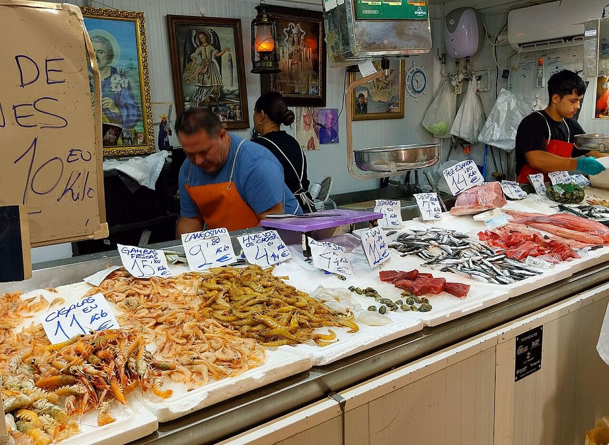

Las excepciones · Elecciones: 23 de julio de 2023
Puerto Real no vota lo que dicen sus datos
Puerto Real vota 23 puntos menos a la derecha de lo que predicen sus datos: la mayor excepción de España
Por Nacho G. del Álamo ·
Por su renta, edad, paro, estudios, extranjeros y tamaño, a Puerto Real (Cádiz) le correspondería dar a PP, Vox y Cs alrededor del 50,1 % del voto. El 23J les dio el 26,9 %. Es la mayor diferencia entre los 770 municipios de más de 10.000 habitantes. El PSOE ganó allí con el 43,3 % en una provincia que ganó el PP.
Dato: verificable y reproducible
La pregunta: ¿Qué municipio se aparta más de lo que su perfil social haría esperar?
Lo que dicen sus datos y lo que dicen sus urnas
DatoCon seis datos del INE (renta, edad media, paro, estudios superiores, población extranjera y tamaño) y la provincia, se puede estimar con bastante acierto cuánto vota a la derecha un municipio español. El modelo de esta serie explica el 86 % de las diferencias entre municipios. Lo interesante es el resto: los lugares donde falla.
DatoNinguno falla tanto como Puerto Real. Es un municipio de 41.846 habitantes en la bahía de Cádiz, con una renta de 19.216 euros por unidad de consumo y un paro del 30,7 % en 2021. Con ese perfil, a PP, Vox y Cs les correspondería alrededor del 50,1 % del voto. El 23J sacaron el 26,9 %: 23,2 puntos menos.
DatoEl reparto fue PSOE 43,3 %, Sumar 24,6 %, PP 18,7 % y Vox 8,2 %. En el conjunto de la provincia, el PP fue primero con el 34,8 % y el PSOE sacó el 33,2 %.
Un caso único en la bahía
DatoLo que pasa en Puerto Real no pasa en sus vecinos. San Fernando (+1,2 puntos), El Puerto de Santa María (+2,6), Jerez (+2,2) y Chiclana (+3,9) votan prácticamente lo que predice su perfil. Solo Cádiz capital se queda claramente por debajo, a 8,4 puntos, menos de la mitad que Puerto Real.
DatoEn el resto de España, las siguientes excepciones son Castro-Urdiales (Cantabria, −19,4), Jódar (Jaén, −19,0), Ansoáin/Antsoain (Navarra, −17,8), San Martín del Rey Aurelio (Asturias, −16,2), Mieres (Asturias, −14,8). Ninguna se aparta tanto como Puerto Real.
No es de ahora
DatoLa izquierda estatal (PSOE más el espacio de IU, Podemos y Sumar) sacó en Puerto Real el 70,8 % en 2004 y el 67,9 % en 2023. Solo en 2011 bajó con fuerza, al 54,8 %, el año en que en toda la provincia cayó al 41,5 %.
PatrónMientras la provincia se movía a la derecha, Puerto Real se quedó donde estaba. La izquierda bajó en el conjunto de Cádiz del 58,2 % al 46,0 %, y la distancia de Puerto Real con su provincia creció de 12,6 a 21,9 puntos.
DatoEl voto local va en la misma dirección. En las municipales de 2023 fue primera la lista «Confluencia de Izquierdas para la Gente (Izquierda Unida- Verdes Equo-Independientes)», con el 33,4 % del voto válido.
Sobre el terreno
DatoPuerto Real nació por decisión de los Reyes Católicos, que le dieron carta puebla el 18 de junio de 1483 para tener un puerto bajo jurisdicción directa de la Corona en la bahía de Cádiz. Fuentes: 1, 2
Lo que no sabemos
- HipótesisPor qué. La hipótesis más citada en la conversación pública es la tradición obrera y sindical ligada a la industria naval de la bahía. Esta pieza aún no la ha contrastado con dos fuentes independientes (hemeroteca, estudios sobre el movimiento obrero en la bahía, entrevistas), así que la deja como hipótesis.
Dato: verificable y reproducible. Patrón: relación descriptiva, sin causa. Hipótesis: explicación posible que aún no tiene dos fuentes independientes.
Los datos
| Municipio | Real | Previsto | Diferencia | Renta (€/u.c.) |
|---|---|---|---|---|
| Puerto Real | 26,9 | 50,1 | -23,2 | 19.216 |
| Cádiz | 42,2 | 50,6 | -8,4 | 22.414 |
| San Roque | 53,4 | 57,7 | -4,4 | 20.881 |
| Conil de la Frontera | 48,9 | 50,3 | -1,4 | 17.583 |
| Barbate | 48,2 | 48,5 | -0,3 | 15.596 |
| Los Barrios | 54,2 | 53,4 | +0,8 | 20.209 |
| San Fernando | 50,7 | 49,5 | +1,2 | 19.319 |
| La Línea de la Concepción | 54,5 | 52,3 | +2,2 | 17.213 |
| Jerez de la Frontera | 52,0 | 49,7 | +2,2 | 18.377 |
| El Puerto de Santa María | 53,5 | 51,0 | +2,6 | 20.018 |
| Sanlúcar de Barrameda | 49,7 | 47,0 | +2,7 | 15.402 |
| Arcos de la Frontera | 51,0 | 48,3 | +2,8 | 15.844 |
| Chiclana de la Frontera | 53,8 | 49,9 | +3,9 | 17.693 |
| Rota | 56,5 | 51,2 | +5,3 | 19.203 |
| Algeciras | 58,0 | 52,4 | +5,5 | 18.915 |
Preguntas
¿Qué significa «lo que predicen sus datos»?
Es el porcentaje que estima un modelo de regresión a partir de la renta, la edad media, el porcentaje de extranjeros, los estudios superiores, el paro, el tamaño del municipio y su provincia. La metodología completa está enlazada al final.
Método y fuentes
- Qué se compara
- Los 770 municipios españoles de más de 10.000 habitantes con todos los indicadores disponibles, frente a lo que predice para cada uno un modelo estadístico estimado con 6.700 municipios.
- Límites
- Un modelo estadístico no es una explicación: la diferencia indica dónde mirar, no por qué. «Derecha» suma PP, Vox y Cs; los partidos regionalistas quedan fuera, lo que afecta a Cantabria (PRC).
- Metodología completa
- Cómo se calculan los porcentajes, el modelo, los gemelos y los escaños
- Fuentes
- Ministerio del Interior, resultados electorales por mesa (Infoelectoral). Congreso 2004-2023 vía pollspaindata, commit ee5ecda; municipales 2007-2023 de los ficheros de Infoelectoral
- INE, Atlas de Distribución de Renta de los Hogares 2023 (renta, edad, población), vía ineAtlas.data
- INE, Censo de Población y Viviendas 2021 (estudios, paro, extranjeros)
- Autoría
- Nacho G. del Álamo
- Revisión de datos y texto
- Nacho G. del Álamo, 6 de octubre de 2026
- Publicado · actualizado
- 6 de octubre de 2026 · 7 de octubre de 2026
- Correcciones
- Ninguna. Historial del Atlas